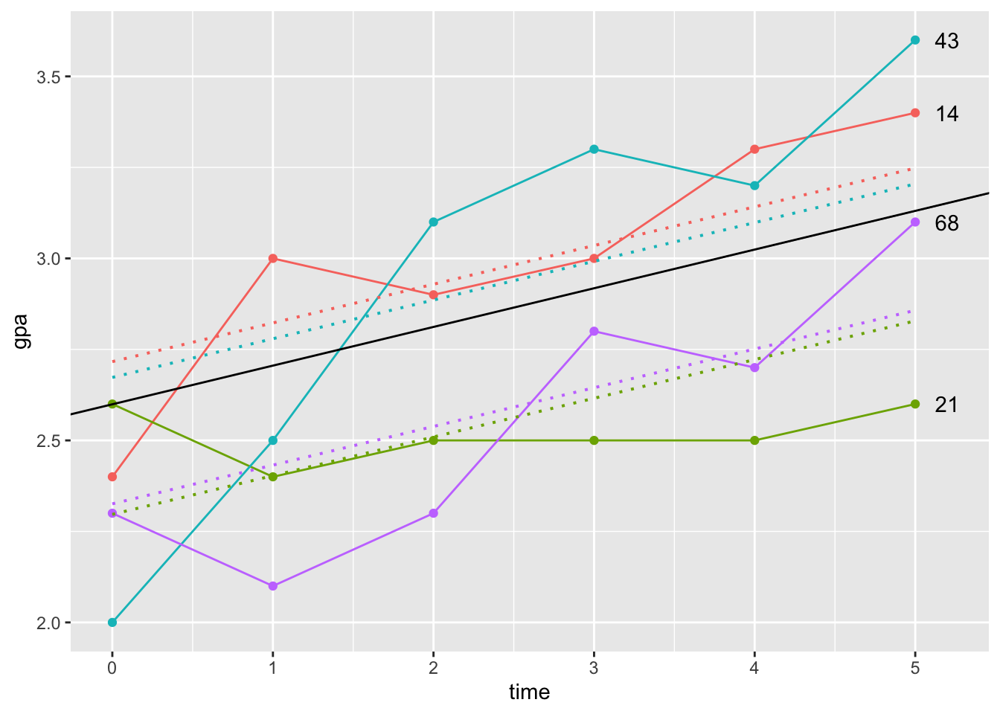

Lösungen Übungsaufgaben
1 Pakete laden
Laden sie die Pakete tidyverse, nlme, knitr und broom.mixed mit dem Befehl library().
# Sammlung von Paketen, viel zu Datenmanipulation
library("tidyverse")
# Für die Berechnung der Multilevel Modelle
library("nlme")
# Für die Weiterverarbeitung der Ergebnisse des Pakets nlme
library("broom.mixed")
# Wird einmal für die Darstellung einer Tabelle benötigt
library("kableExtra")2 Daten laden
Laden Sie die Datendatei gpa2.csv mit dem Befehl read_csv2(). Speichern Sie die Daten in einem neuen Objekt unter dem Namen gpa_data. Betrachten Sie die Daten in dem Objekt gpa_data näher. Benutzen Sie hierzu die Befehle head() und str().
gpa_data <- read.csv2(file = "./data/gpa2.csv")
head(gpa_data)## student sex highgpa gpa1 gpa2 gpa3 gpa4 gpa5 gpa6 job1 job2 job3 job4 job5 job6 admitted
## 1 1 1 2.8 2.3 2.1 3.0 3.0 3.0 3.3 2 2 2 2 2 2 1
## 2 2 0 2.5 2.2 2.5 2.6 2.6 3.0 2.8 2 3 2 2 2 2 0
## 3 3 1 2.5 2.4 2.9 3.0 2.8 3.3 3.4 2 2 2 3 2 2 1
## 4 4 0 3.8 2.5 2.7 2.4 2.7 2.9 2.7 3 2 2 2 2 2 0
## 5 5 0 3.1 2.8 2.8 2.8 3.0 2.9 3.1 2 2 2 2 2 2 1
## 6 6 1 2.9 2.5 2.4 2.4 2.3 2.7 2.8 2 3 3 2 3 3 0str(gpa_data)## 'data.frame': 200 obs. of 16 variables:
## $ student : int 1 2 3 4 5 6 7 8 9 10 ...
## $ sex : int 1 0 1 0 0 1 0 1 0 0 ...
## $ highgpa : num 2.8 2.5 2.5 3.8 3.1 2.9 2.3 3.9 2 2.8 ...
## $ gpa1 : num 2.3 2.2 2.4 2.5 2.8 2.5 2.4 2.8 2.8 2.8 ...
## $ gpa2 : num 2.1 2.5 2.9 2.7 2.8 2.4 2.4 2.8 2.7 2.8 ...
## $ gpa3 : num 3 2.6 3 2.4 2.8 2.4 2.8 3.1 2.7 3 ...
## $ gpa4 : num 3 2.6 2.8 2.7 3 2.3 2.6 3.3 3.1 2.7 ...
## $ gpa5 : num 3 3 3.3 2.9 2.9 2.7 3 3.3 3.1 3 ...
## $ gpa6 : num 3.3 2.8 3.4 2.7 3.1 2.8 3 3.4 3.5 3 ...
## $ job1 : int 2 2 2 3 2 2 3 2 2 2 ...
## $ job2 : int 2 3 2 2 2 3 2 2 2 2 ...
## $ job3 : int 2 2 2 2 2 3 3 2 3 2 ...
## $ job4 : int 2 2 3 2 2 2 2 2 2 3 ...
## $ job5 : int 2 2 2 2 2 3 2 2 2 2 ...
## $ job6 : int 2 2 2 2 2 3 2 2 2 2 ...
## $ admitted: int 1 0 1 0 1 0 1 1 9 1 ...3 Daten auswählen
Wählen Sie mit dem Befehl select() die für die Analyse relevanten Variablen student, sex und gpa1 bis gpa6 aus. Im Anschluss benennen Sie mit dem Befehl rename() den Variablennamen student in student_id um. Betrachten Sie die Ergebnisse der Datenmanipulation.
gpa_data <- select(gpa_data, student, sex, starts_with("gpa"))
gpa_data <- rename(gpa_data, student_id = student)
head(gpa_data)## student_id sex gpa1 gpa2 gpa3 gpa4 gpa5 gpa6
## 1 1 1 2.3 2.1 3.0 3.0 3.0 3.3
## 2 2 0 2.2 2.5 2.6 2.6 3.0 2.8
## 3 3 1 2.4 2.9 3.0 2.8 3.3 3.4
## 4 4 0 2.5 2.7 2.4 2.7 2.9 2.7
## 5 5 0 2.8 2.8 2.8 3.0 2.9 3.1
## 6 6 1 2.5 2.4 2.4 2.3 2.7 2.84 Daten umstrukturieren
Strukturieren Sie die Daten mit dem Befehl pivot_longer() um. Überführen Sie dabei die Variablen gpa1 bis gpa6 von dem Wide-Format in das Long-Format. Die neu entstehende Spalte mit den GPA-Werten für alle Messzeitpunkte soll dabei den Variablennamen gpa erhalten und die Namen der Variablen gpa1 bis gpa6 sollen in eine Spalte mit dem Namen time überführt werden. Betrachten Sie die Ergebnisse der Umstrukturierung.
gpa_data_long <- pivot_longer(gpa_data,
cols = starts_with("gpa"),
names_to = "time",
values_to = "gpa")
gpa_data_long## # A tibble: 1,200 × 4
## student_id sex time gpa
## <int> <int> <chr> <dbl>
## 1 1 1 gpa1 2.3
## 2 1 1 gpa2 2.1
## 3 1 1 gpa3 3
## 4 1 1 gpa4 3
## 5 1 1 gpa5 3
## 6 1 1 gpa6 3.3
## 7 2 0 gpa1 2.2
## 8 2 0 gpa2 2.5
## 9 2 0 gpa3 2.6
## 10 2 0 gpa4 2.6
## # … with 1,190 more rows5 Bildung Zeitvariable
Im Folgenden wird die Variable time überschrieben und eine neue Zeitvariable mit den Werten 0 bis 5 gebildet. Überprüfen Sie mit der Funktion print(), ob die Werte korrekt erstellt wurden. Wie beurteilen Sie, dass der erste Messzeitpunkt den Wert 0 erhalten hat?
gpa_data_long <- gpa_data_long%>%
group_by(student_id)%>%
mutate(time = 1:n()-1)
print(gpa_data_long, n = 15)## # A tibble: 1,200 × 4
## # Groups: student_id [200]
## student_id sex time gpa
## <int> <int> <dbl> <dbl>
## 1 1 1 0 2.3
## 2 1 1 1 2.1
## 3 1 1 2 3
## 4 1 1 3 3
## 5 1 1 4 3
## 6 1 1 5 3.3
## 7 2 0 0 2.2
## 8 2 0 1 2.5
## 9 2 0 2 2.6
## 10 2 0 3 2.6
## 11 2 0 4 3
## 12 2 0 5 2.8
## 13 3 1 0 2.4
## 14 3 1 1 2.9
## 15 3 1 2 3
## # … with 1,185 more rows6 Graphik Einzelverläufe I
Das Objekt gpa_subsample enthält die Messwerte von vier Personen (IDs 14, 21, 43, 68). Im Folgenden soll für diese Personen der Verlauf der GPA-Werte über die Zeit dargestellt werden. Dabei werden verschiedene Funktionen des Pakets ggplot2 benutzt. In der Funktion ggplot() müssen hierzu zunächst die Variablen time und gpa als x- bzw. y-Wert angegeben werden. Damit die GPA-Werte einer Person eindeutig zugeordnet werden können, muss für das Argument group zusätzlich die Variable student_id angegeben werden. Betrachten Sie die Ergebnisse der im Objekt graph_cases abgespeicherten Graphik.
gpa_subsample <- gpa_data_long%>%
filter(student_id %in% c(14, 21, 43, 68))
gpa_subsamplegraph_cases <- ggplot(gpa_subsample, aes(x = time, y = gpa, group = student_id)) +
# Angabe, dass die Werte als Linien dargestellt werden sollen
geom_line(aes(color = as.factor(student_id))) +
# Die Werte der Personen sollen zusätzlich als Punkte dargestellt werden
geom_point(aes(color = as.factor(student_id))) +
# Beschriftung der Geraden mit der ID
geom_text(data = filter(gpa_subsample, time == last(time)),
aes(label = as.factor(student_id)),
position = position_nudge(x = 0.2),
check_overlap = TRUE) +
theme(legend.position = "none")
graph_cases
7 Mehrebenenmodell I
Berechnen Sie das Random-Intercept, Random-Slope Modell mit der Funktion lme() aus dem Paket lmer. Die Funktion benötigt die Daten dabei im Longformat. Diese sind in dem Objekt gpa_data_long gespeichert. Als Variablen müssen gpa als Ergebnisvariable und time als Prädiktorvariable angegeben werden. Betrachten Sie die Ergebnisse anschließend mit der Funktion summary(). Welche festen Effekte sind signfikant? Können Sie beurteilen, ob die zufälligen Effekte signifikant sind?
mod1 <- lme(gpa ~ time, random = ~ 1 + time | student_id, data = gpa_data_long)
summary(mod1)## Linear mixed-effects model fit by REML
## Data: gpa_data_long
## AIC BIC logLik
## 272.9566 303.487 -130.4783
##
## Random effects:
## Formula: ~1 + time | student_id
## Structure: General positive-definite, Log-Cholesky parametrization
## StdDev Corr
## (Intercept) 0.21259026 (Intr)
## time 0.06711178 -0.098
## Residual 0.20588283
##
## Fixed effects: gpa ~ time
## Value Std.Error DF t-value p-value
## (Intercept) 2.5992143 0.018357249 999 141.59062 0
## time 0.1063143 0.005884789 999 18.06595 0
## Correlation:
## (Intr)
## time -0.345
##
## Standardized Within-Group Residuals:
## Min Q1 Med Q3 Max
## -3.26951121 -0.53771385 -0.01277499 0.53258654 3.19388035
##
## Number of Observations: 1200
## Number of Groups: 2008 Konfidenzintervalle
Das Objekt mod1 enthält die Ergebnisse des Random-Intercept, Random-Slope Modells. Wenden Sie die Funktion tidy()aus dem Paket broom.mixed auf das Objekt mod1 an. In der Funktion setzen Sie dabei den Wert des Arguments conf.int auf TRUE und geben für das Argument conf.level den Wert 0.95 an. Dadurch werden die Konfidenzintervalle der Parameter geschätzt und die Signifikanz der zufälligen Effekte kann nun zusätzlich beurteilt werden. Welche der zufälligen Effekte werden signikant?
mod1_coef <- tidy(mod1, conf.int = TRUE, conf.level = 0.95)
kbl(mod1_coef, digits = 2) %>%
kable_styling(bootstrap_options = "striped")| effect | group | term | estimate | std.error | df | statistic | p.value | conf.low | conf.high |
|---|---|---|---|---|---|---|---|---|---|
| fixed | fixed | (Intercept) | 2.60 | 0.02 | 999 | 141.59 | 0 | 2.56 | 2.64 |
| fixed | fixed | time | 0.11 | 0.01 | 999 | 18.07 | 0 | 0.09 | 0.12 |
| ran_pars | student_id | sd_(Intercept) | 0.21 | 0.18 | 0.25 | ||||
| ran_pars | student_id | cor_time.(Intercept) | -0.10 | -0.29 | 0.10 | ||||
| ran_pars | student_id | sd_time | 0.07 | 0.06 | 0.08 | ||||
| ran_pars | Residual | sd_Observation | 0.21 |
9 Graphik feste Effekte
Die Objekte fix_intercept und fix_slope enthalten die festen Effekte des Random-Intercept, Random-Slope Modells. Erweitern Sie die erste Graphik im Objekt graph_cases und stellen Sie zusätzlich die Gerade dar, die über die festen Effekte geschätzt wird. Für die Erweiterung nehmen Sie die Funktion geom_abline() aus dem Paket ggplot2. Betrachten Sie im Anschluss die Ergebnisse der erweiterten Graphik.
fix_intercept <- summary(mod1)$coef$fixed[[1]]
fix_slope <- summary(mod1)$coef$fixed[[2]]graph_fixed <- graph_cases +
geom_abline(intercept = fix_intercept, slope = fix_slope)
graph_fixed
10 Mehrebenenmodell II
Berechnen Sie das Random-Intercept, Fixed-Slope Modell. Berücksichtigen Sie dabei die Variablen gpa und time und geben in der Funktion lme() die festen und die zufälligen Effekte an. Betrachten Sie anschließend die Ergebnisse mit der Funktion summary().
mod2 <- lme(gpa ~ time, random = ~ 1 | student_id, data = gpa_data_long)
summary(mod2)## Linear mixed-effects model fit by REML
## Data: gpa_data_long
## AIC BIC logLik
## 416.8929 437.2465 -204.4464
##
## Random effects:
## Formula: ~1 | student_id
## (Intercept) Residual
## StdDev: 0.2524261 0.2410156
##
## Fixed effects: gpa ~ time
## Value Std.Error DF t-value p-value
## (Intercept) 2.5992143 0.021696341 999 119.79966 0
## time 0.1063143 0.004073908 999 26.09639 0
## Correlation:
## (Intr)
## time -0.469
##
## Standardized Within-Group Residuals:
## Min Q1 Med Q3 Max
## -3.6168789167 -0.6372864654 -0.0004140885 0.6361352498 2.8309929648
##
## Number of Observations: 1200
## Number of Groups: 20011 Daten Modellschätzung
In dem Objekt mod2 sind die Ergebnisse des Random-Intercept, Fixed-Slope Modells gespeichert. Wenden Sie die Funktion augment() aus dem Paket broom.mixed auf das Objekt an. Betrachten Sie im Anschluss die von der Funktion ausgegebenen Werte und versuchen ihre Bedeutung zu erfassen. Bei der Variable .fitted handelt es sich um die individuell vorhergesagten Werte der Personen. Um die Werte noch besser zu verstehen, sollen diese in der nächsten Übung graphisch dargestellt werden.
mod2_data <- augment(mod2)
mod2_data## # A tibble: 1,200 × 7
## student_id sex time gpa .fitted .resid .fixed
## <int> <int> <dbl> <dbl> <dbl> <dbl> <dbl>
## 1 1 1 0 2.3 2.53 -0.228 2.60
## 2 1 1 1 2.1 2.63 -0.535 2.71
## 3 1 1 2 3 2.74 0.259 2.81
## 4 1 1 3 3 2.85 0.153 2.92
## 5 1 1 4 3 2.95 0.0464 3.02
## 6 1 1 5 3.3 3.06 0.240 3.13
## 7 2 0 0 2.2 2.38 -0.184 2.60
## 8 2 0 1 2.5 2.49 0.0100 2.71
## 9 2 0 2 2.6 2.60 0.00374 2.81
## 10 2 0 3 2.6 2.70 -0.103 2.92
## # … with 1,190 more rows12 Graphik Einzelverläufe II
Erweitern Sie die zweite Graphik graph_fixed, um die individuell geschätzten Geradengleichungen. Benutzen Sie hierzu die im Objekt mod2_subsample gespeicherten Daten. Dabei müssen in der Funktion geom_line die Variablen time und .fitted als x- bzw. als y-Wert angegeben werden.
mod2_subsample <- filter(mod2_data, student_id %in% c(14, 21, 43, 68))
mod2_subsamplegraph_indi <- graph_fixed +
geom_line(data = mod2_subsample,
aes(x = time, y = .fitted,
color = as.factor(student_id)),
linetype = "dotted",
size = 0.7)
graph_indi
13 Mehrebenenmodell III
Berechnen Sie das Intercepts- and Slopes-as-Outcomes Modell, indem Sie die Variablen gpa, sex und time berücksichtigen. Betrachten Sie die Ergebnisse der Koeffizienten und hier insbesondere die festen Effekte. Versuchen Sie die Bedeutung die Prädiktoren sex und time:sex dem Gleichungssystem aus der Präsentation zuzuordnen.
mod3 <- lme(gpa ~ time*sex, random = ~ time | student_id, data = gpa_data_long)
mod3_coef <- tidy(mod3, conf.int = TRUE)
kbl(mod3_coef, digits = 2) %>%
kable_styling(bootstrap_options = "striped")| effect | group | term | estimate | std.error | df | statistic | p.value | conf.low | conf.high |
|---|---|---|---|---|---|---|---|---|---|
| fixed | fixed | (Intercept) | 2.56 | 0.03 | 998 | 96.89 | 0.00 | 2.51 | 2.61 |
| fixed | fixed | time | 0.09 | 0.01 | 998 | 10.81 | 0.00 | 0.07 | 0.11 |
| fixed | fixed | sex | 0.08 | 0.04 | 198 | 2.07 | 0.04 | 0.00 | 0.15 |
| fixed | fixed | time:sex | 0.03 | 0.01 | 998 | 2.49 | 0.01 | 0.01 | 0.05 |
| ran_pars | student_id | sd_(Intercept) | 0.21 | 0.18 | 0.24 | ||||
| ran_pars | student_id | cor_time.(Intercept) | -0.14 | -0.35 | 0.08 | ||||
| ran_pars | student_id | sd_time | 0.07 | 0.06 | 0.08 | ||||
| ran_pars | Residual | sd_Observation | 0.21 |